<!DOCTYPE html>
<html lang="en">

<head>
    <meta charset="UTF-8">
    <meta name="viewport" content="width=device-width, initial-scale=1.0">
    <link rel="stylesheet" href="./Style.css">
    <title>SVG</title>
</head>

<body>
    <!--  -->

    <!-- vedi repository del prof. - lui ha disegnato una lampadina -->

    <button onclick="rotation()"> <!-- onclick è l'attributo che permette di eseguire una funzione JavaScript quando si clicca sul bottone -->
        
<!-- html svg xmlns indica che stai usando codice SVG (Scalable Vector Graphics) all'interno di un documento HTML, dove xmlns (XML Namespace) dichiara che il codice SVG appartiene allo spazio dei nomi SVG (generalmente www.w3.org), 
permettendo al browser di interpretare correttamente le sue forme e attributi, rendendo le grafiche vettoriali, scalabili e modificabili tramite CSS e JavaScript -->
         
<!-- viewBox è l'attributo che specifica la dimensione e la posizione dell'area di visualizzazione dell'elemento SVG -->
<!-- L'attributo viewBox in SVG definisce un sistema di coordinate per il tuo disegno, specificando quattro valori: min-x, min-y, width e height, 
come in <svg viewBox="0 0 100 100">, dove 0 0 è l'angolo in alto a sinistra e 100 100 indica una tela virtuale di 100 unità di larghezza per 100 di altezza, 
permettendo allo SVG di scalare correttamente senza perdita di qualità, adattandosi al suo contenitore (viewport) -->

        <svg id="hamburguer" width="50" xmlns="http://www.w3.org/2000/svg" viewBox="0 0 530 530" onmouseover="changeImageColor(this)" onmouseout="returnToOriginalColor(this)">

        <!-- onmouseover e onmouseout sono attributi che permettono di eseguire funzioni JavaScript quando il mouse entra o esce dall'elemento -->
         <!-- this è un riferimento all'elemento SVG corrente -->

        <rect x="70" y="390" width="400" height="60" rx="30" ry="30"></rect>
        <rect x="70" y="250" width="400" height="60" rx="30" ry="30"></rect>
        <rect x="70" y="110" width="400" height="60" rx="30" ry="30"></rect>

        <!-- per rendere rotondi gli angoli devo usare rx e ry -->
        <!-- rx e ry sono attributi che definiscono il raggio delle curve degli angoli rettangoli -->

        </svg>
    </button>

</body>
<script src="./App.js"></script>

</html>